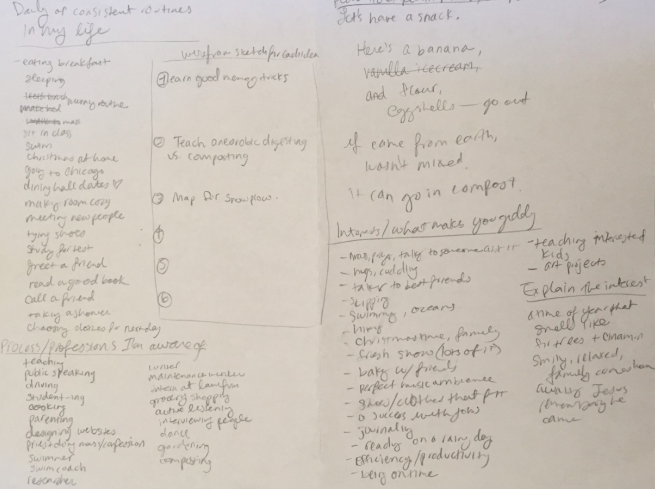

Hey World is an interactive map with surprising greetings
my role
prototyping, user testing, wireframing, html/css
results
a functional site on github
i love to teach
How might I teach using an interactive site? Through rapid brainstorming, I listed over 50 different engaging classes, familiar activities, and step-by-step routines that I am remember well.

ideate
I sketched out 3 wireframes of vastly different sites, showing headers, body copy, and buttons for interaction.
idea #1: goal making

idea #2: active listening

idea #3: world's greetings

user test
I created a moveable paper wireframe. For 2 user testings, I was the “computer,” reacting to the user’s “clicks.” I kept to my script when I spoke, so that I would be able to see where my site needed more user guidance.
insights
After throwing post it notes on a whiteboard and brainstorming, I distilled 4 pain points and 3 solutions. I decided to create a simpler site that minimizes the clicks necessary to view the content.